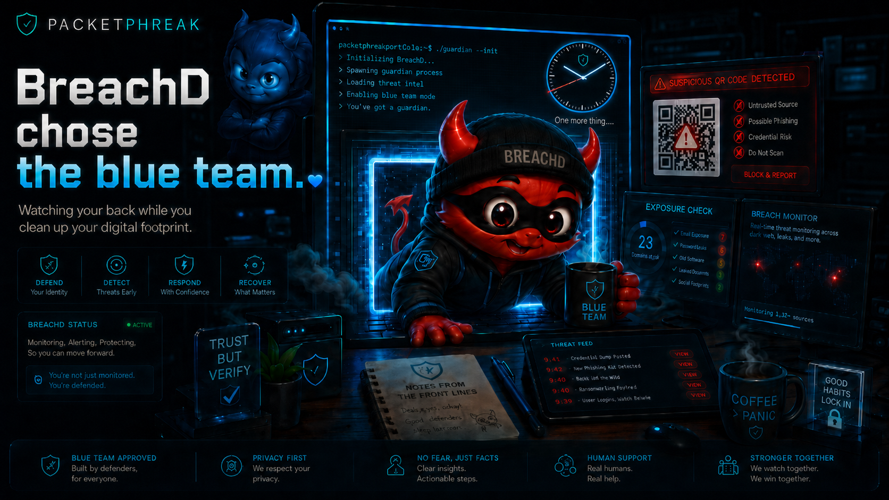

Hybrid Identity
Active Directory, Entra ID, domain join, authentication flow, group membership, password-change behavior, and identity troubleshooting.
Infrastructure • Networking • Identity • Root Cause
I’m Joshua C. McDonald — an infrastructure and network analyst focused on Active Directory, Entra ID, routing, switching, documentation, and turning messy symptoms into clear root cause.
About
I work across infrastructure, networking, identity, endpoints, vendors, and support operations. My lane is the messy middle: where authentication, DNS, routing, switching, cloud identity, documentation, and user impact all collide.
I specialize in finding the real failure beneath the symptoms, documenting it clearly, and helping teams move from “something is broken” to a fixable action plan.
Focus Areas
Active Directory, Entra ID, domain join, authentication flow, group membership, password-change behavior, and identity troubleshooting.
Routing, switching, VLANs, wireless, ports, uplinks, segmentation, and the eternal question: “where does the packet actually go?”
Servers, virtualization, storage, firewalls, backups, site support, documentation, vendor handoffs, and operational continuity.
PowerShell reporting, repair workflows, endpoint investigation, repeatable checks, and scripts that reduce repetitive support pain.
Portfolio
No internal IPs, no private screenshots, no vendor drama. Just the kind of work that shows judgment.
Mapped a segmented OT-to-cloud path for PI / analytics connectivity, tracing the packet through layered firewalls, DMZ relay services, NAT, internet egress, and cloud-side routing.
Worked through endpoint visibility, VLAN behavior, switchport state, authentication paths, and physical-layer assumptions.
Supported distributed environments with servers, switches, firewalls, Wi-Fi, virtualization, storage, and business-critical operations.
Experience
Manufacturing IT operations, identity support, network troubleshooting, endpoint support, vendor coordination, and escalation documentation.
Multi-site infrastructure, firewall and switch environments, virtualization, storage, wireless, support operations, and documentation.
Progressive IT roles across enterprise, education, manufacturing, and consulting environments.
BreachD · Digital identity helper
A blue-team daemon waltzed into PacketPhreak, fired up the terminal, and built a live exposure console for visitors who want fewer surprises in their digital footprint.
